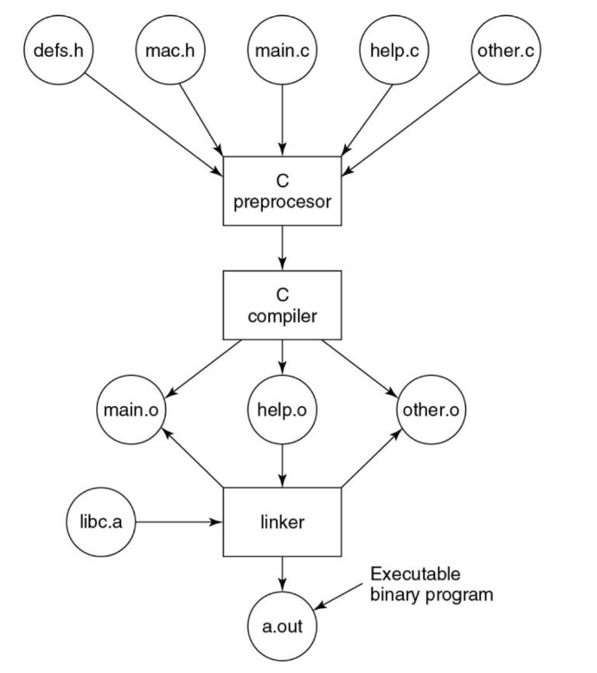
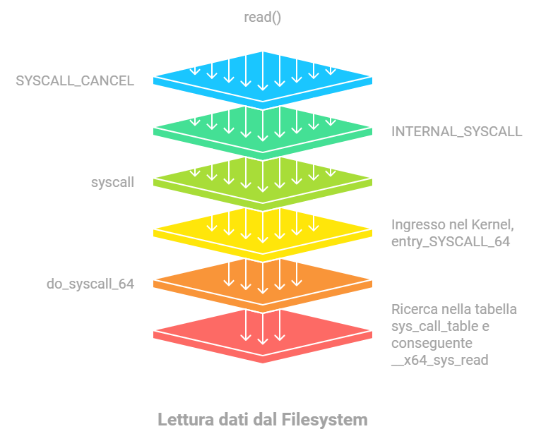

C nasce da Ritchie nel 1972 per sviluppare programmi UNIX
ricordiamo che alcune caratteristiche di UNIX sono ancora in circolazione come everything is a file
Quando avviamo un processo, in modo predefinito si aprono questi 3 file(stream)
sono numerati, e sono dei file descriptor
Nome
Nome abbreviato
Numero del file
Descrizione
Standard in
stdin
0
Input dalla tastiera
Standard out
stdout
1
Output alla console
Standard Error
stderr
2
Errore di output
Per illustrare il concetto di chiamate di sistema, possiamo stampare “Hello World!” utilizzando diversi metodi:
per eseguire un programma in c faremmo
./programma arg1 arg2 arg3
oppure
./programma ciao a tutti
argc(argument count), conta quante parole(argomenti) scriviamo su riga di comando contando anche la chiamata del programma stesso ./programma
**argv (argument vector), è un array di puntatori dove ogni puntatore punta a una stringa di ciascun argomento
argv[0] sarà ./programma (nome del programma).
argv[1] sarà ciao.
argv[2] sarà a.
argv[3] sarà tutti.
Build Process
Abbiamo 4 principali step
Ho i miei file c e le mie librerie e le do in input al pre preprocessore C
Il compilatore C riceve dal preprocessore un file dopo aver fatto una rapida lettura e aver interpretato(condizioni, librerie, costanti ecc…) per evitargli intoppi
Il compilatore dopo aver compilato il codice butterà in output dei file in linguaggio macchina
Questi file saranno tutti uniti da un linker che creerà il vero e proprio eseguibile prendendo e mettendo in comune funzioni, variabili ecc…

Metodo 2(usando chiamate di sistema in modo astratto)
per fare chiamate di sistema usiamo unistd.h una libreria che consente di gestire operazioni a basso livello
definiamo una costante STDOUT per un uso più semplice nella write
creiamo una stringa di caratteri per mettere hello world...
definiamo la funzione write che scrive in un determinato file, accetta 3 parametri fondamentali
il file descriptor, ovvero un intero che identifica un determinato file, i primi 3 sono già
predefiniti e ogni file ha il suo, in questo caso usiamo 1 perché vogliamo scrivere alla console
il secondo è la stringa o la cosa che vogliamo stampare
la terza è la dimensione specifica che ha il messaggio che vogliamo stampare
Metodo 3(usando chiamate di sistema ma in modo meno astratto)
utilizziamo una libreria per effettuare delle syscall in modo diretto
unistd.h vs syscall.h
sembra che facciano le stesse cose solo che unistd.h è più astratto e meno diretto e semplice
in unistd.h avrò read write ecc come funzioni
in syscall.h devo usare il numero di chiamata di sistema e sarà più diretto
senza che ripetiamo le altre cose arriviamo al dunque
includiamo la libreria syscall.h
definiamo nr, sarà il numero di chiamata di sistema da fare, ci sono tipo read open write..
effettuo la syscall che accetta di solito i seguenti argomenti:
numero di chiamata di sistema in questo riguarda write
il descrittore di file da utilizzare
il messaggio
la dimensione
piccola nota sui descrittori
da quello che ho capito i descrittori identificano su quale file fare operazioni in stream
come read write ecc…
stream tipo una porzione di file continua dove passiamo le informazioni
Libc e Syscall
Libc è una libreria standard del linguaggio C che fornisce molte funzionalità per facilitare lo sviluppo di programmi; include dei wrapper per semplificare l’uso delle syscall.
I wrapper sono funzioni che “impacchettano” la chiamata a basso livello alle syscall per permetterti di usarle in un modo più semplice e leggibile.
Quando non si usa Libc è necessario fare uso diretto delle syscall. Ci sono due modi:
Utilizzare la funzione syscall().
Usare l’istruzione int 0x80, che è un’istruzione in linguaggio assembly specifica per effettuare una syscall in sistemi Linux a 32 bit.
libc: è una libreria che contiene varie funzioni standard in c come malloc, printf... e anche chiamate POSIX
unistd.h: è un file di intestazione(un file che ha delle funzioni costanti ecc…) che dichiara funzioni POSIX come write, read e fork, è un sottoinsieme di libc che serve solo per semplificare alcune chiamate POSIX
syscall.h: consente di effettuare delle chiamate di sistema direttamente al kernel senza passaggi, è decisamente più a basso livello delle altre
cosa è un file di intestazione?
un file di intestazione ha al suo interno prototipi di funzioni di altre librerie e costanti.
consente di fare da intermediario tra il codice scritto dal programmatore e le varie librerie.
mostra solo quali strutture e funzioni sono disponibili
La dichiarazione in un header è essenziale per il compilatore perché gli permette di verificare la correttezza dei parametri e fare in modo che il codice venga compilato senza errori.
ci permette di leggere funzioni e parametri senza andare a leggere il codice
dobbiamo dichiarare le librerie comunque
cosa sono i wrapper?
Non sono dei cantanti xD
si chiamano così quelle funzioni che implementano altre funzioni ma le migliorano “aggiungendo” cose
in pratica, un wrapper è una sorta di “strato” di codice che si trova intorno a un’altra funzione
un esempio è tipo una funzione che fa delle equazioni e tu gli aggiungi una funzione che fa da wrapper e magari stampa il log di quella funzione con tutti i passaggi che fa
La ATTRAVERSATA del Croce
Come abbiamo detto in precedenza syscall è la versione più a basso livello delle altre funzioni che abbiamo visto, ora vedremo dei passaggi da read della libreria libc→syscall
elenco dei passaggi
alcuni punti saranno approssimati per rendere l’idea
Tutti i passaggi da read() a sys_read()
Funzione read() in glibc
All’interno della libreria glibc(implementazione della libc) è presente un wrapper chiamato read().
La sua implementazione si trova nel file read.c all’interno della libreria glibc.
Macro SYSCALL_CANCEL
Dentro la funzione read(), per effettuare effettivamente la chiamata di sistema, viene utilizzata una macro chiamata SYSCALL_CANCEL, garantisce che una syscall possa essere “cancellata” senza compromettere il comportamento del programma.
La sua implementazione si trova nel file sysdep.h.
si chiama con il #define ed è tipo una funzione
Macro INTERNAL_SYSCALL
La macro SYSCALL_CANCEL utilizza a sua volta INTERNAL_SYSCALL, che si occupa di configurare i registri del processore, per fare il passaggio di parametri al kernel quando chiamiamo syscall
La definizione di questa macro si trova anch’essa in sysdep.h.
Punto di ingresso nel kernel (entry_SYSCALL_64)
Quando l’istruzione syscall viene eseguita, il processore cambia modalità(cambio di contesto), passando dall’esecuzione in spazio utente a quella in spazio kernel. Il primo punto in cui il kernel gestisce questa richiesta è la funzione entry_SYSCALL_64, scritta in assembly e definita nel file entry_64.S.
Funzione do_syscall_64
Dopo essere entrati nel kernel tramite entry_SYSCALL_64, la funzione do_syscall_64 prende in carico la richiesta. Questa funzione, scritta in C, ha il compito di determinare quale funzione specifica del kernel deve essere chiamata, basandosi sul numero della syscall che è stato passato (ad esempio, il numero 0 corrisponde alla syscall read).
La definizione di questa funzione si trova nel file common.c.
Tabella delle syscall (sys_call_table)
Per sapere quale funzione del kernel deve essere eseguita, do_syscall_64 consulta la tabella delle syscall, chiamata sys_call_table. Questa tabella mappa i numeri delle syscall alle rispettive funzioni. Per la syscall read, il numero è 0, e la tabella lo collega alla funzione __x64_sys_read.
La tabella si trova nel file syscall_64.tbl.
Funzione __x64_sys_read
Questa funzione è un wrapper per la logica vera e propria della syscall read, implementata internamente in un’altra funzione chiamata ksys_read, che contiene il codice che interagisce con il file system per leggere effettivamente i dati richiesti.
La funzione __x64_sys_read è implementata nel file read_write.c.

CREAZIONE DEI PROCESSI
Cerchiamo attraverso delle funzioni in librerie di creare una shell minimale
quali sono le funzionalità BASILARI di una shell?
Attende un comando: La shell interagisce con l’utente e aspetta un input.
Crea un processo: Quando l’utente digita un comando, la shell utilizza una chiamata di sistema, come fork(), per creare un nuovo processo.
Esegue e attende: Il processo esegue il comando (usando execv()) e la shell aspetta che termini (con wait()).
intanto vediamo il 2 e il 3
1.Creazione di un processo e wait
abbiamo due funzioni
pid_t fork, duplica il processo corrente e ritorna 0 se è il figlio oppure il pid del figlio se è il padre
il fatto che ci sia 0 o il pid serve per differenziare le due cose
pid_t wait, monitora un processo figlio modificando una variabile status che gli passiamo noi, quest’ultima verrà letta dal processo padre
CODICE DI ESEMPIO
void main(void){ int pid, child_status; if (fork() == 0){ fai_qualcosa_nel_figlio(); // una funzione non implementata ma esplicita } else{ wait(&child_status); // il padre aspetta che il figlio cambi stato }}
vediamo il codice in c come se venisse eseguito da entrambe le parti, ovvero sia dal padre che dal figlio
entrambi fanno la chiamata fork
il processo padre usa wait e passa la variabile child status con & per farla modificare
2.Creazione di un processo, wait e execv
execv crea un nuovo processo sostituendolo a quello precedente facendolo cessare di esistere, eliminando le mappature in memoria del vecchio mettendo quelle del nuovo
Non ritorna mai se ha successo:
Se execv() ha successo, il nuovo programma viene eseguito immediatamente e execv()non ritorna mai al chiamante.
Se fallisce (ad esempio, se il file indicato da path non esiste), restituisce un valore negativo e imposta errno.
CODICE DI ESEMPIO
void main(void){ int pid, child_status; char *args[] = {"/bin/ls", "-l", NULL}; // Argomenti per execv() if (fork() == 0) { // Creazione del processo figlio execv(args[0], args); // Nel figlio: carica ed esegui il programma ///bin/ls con argomenti "-l" } else { wait(&child_status); // Nel genitore: aspetta che il figlio termini }}
per far funzionare execv doppiamo negli argomenti
passare il path del programma da eseguire(in questo caso quello in args)
oltre a passare il path passiamo direttamente l’array di puntatori con le relative opzioni del comando
l’ultima posizione di args deve essere NULL per definire la fine
3. Creazione di un processo, wait, execv e attesa di un comando
Esempio di shell minimale
Il seguente codice mostra il funzionamento di una shell minimale, ossia un programma che:
CODICE DI ESEMPIO
while (1) { char cmd[256], *args[256]; // Buffer per il comando e i suoi argomenti int status; // Per memorizzare lo stato del processo figlio pid_t pid; // Per memorizzare il PID del processo figlio read_command(cmd, args); // Legge il comando e gli argomenti dalla riga di // comando pid = fork(); // Crea un nuovo processo figlio if (pid == 0) { // Nel processo figlio execv(cmd, args); // Sostituisce il processo figlio con il programma // specificato exit(1); // Esce con errore se execv fallisce } else { wait(&status); // Nel processo genitore: aspetta che il figlio termini }}
l’unica cosa nuova è read_command che legge dalla riga di comando e modifica le variabili cmd e args,
cmd riceverà il path del programma da eseguire
args le opzioni con il NULL
se scrivo tipo ls -l
ls verrà convertito in un path da mettere in cmd/bin/ls
il path poi -l con NULL verrà messo in args
Come terminare i programmi?
USO CTRL+C che sostanzialmente invia un segnale
I segnali
Cos'è un segnale?
I segnali sono un meccanismo di comunicazione utilizzato in Unix/Linux per notificare ai processi eventi asincroni.
Un segnale è come un messaggio che viene inviato al processo per avvisarlo di un evento specifico, ad esempio:
terminazione
interruzzione
errori vari
ogni processo ha un suo signal handler che gestisce la ricezione dei segnali indirizzati ad esso
Signal, Alarm, Kill
sono in signal.h
vedremo tutti prototipi in questo file header
Cosa fa: Registra un gestore di segnali (signal handler) per un segnale specifico.
signum intero che identifica il tipo di segnale, ad esempio
SIGINT(interruzione)
SIGTERM (richiesta di terminazione)
SIGKILL (terminazione forzata)
handler
dato di tipo sighandler_t un tipo di dato specifico per rappresentare un puntatore a funzione che può gestire un segnale.
colleghiamo un handler al tipo di segnale definito
alarm()
unsigned int alarm(unsigned int seconds);
Cosa fa: Imposta un timer che invia il segnale SIGALRM al processo dopo un certo numero di secondi.
Argomenti:
seconds: Numero di secondi dopo i quali inviare il segnale.
Comportamento:
Dopo che il timer scade, il processo riceve SIGALRM.
Puoi gestire SIGALRM con un handler personalizzato o lasciare il comportamento predefinito.
Se chiami alarm(0), annulli il timer.
ESEMPIO
#include <stdio.h>#include <signal.h>#include <unistd.h>#include <stdlib.h>void alarm_handler(int signal) { printf("In signal handler: caught signal %d!\n", signal); exit(0); // Termina il programma}int main(int argc, char **argv) { signal(SIGALRM, alarm_handler); // Associa SIGALRM al gestore custom alarm(1); // Imposta un timer: SIGALRM sarà inviato dopo 1 secondo while (1) { printf("I am running!\n"); // Stampa "I am running!" continuamente } return 0;}
unsigned int indica un int con solo valori positivi
dichiariamo una funzione che gestirà alarm con un determinato segnale
nel main signal
kill()
int kill(pid_t pid, int sig);
Cosa fa: Invia un segnale specifico a un processo identificato dal suo PID.
Argomenti:
pid: Il PID del processo al quale inviare il segnale.
pid > 0: Il segnale viene inviato al processo con quel PID.
pid == 0: Il segnale viene inviato a tutti i processi nel gruppo del chiamante.
pid < 0: Il segnale viene inviato a tutti i processi nel gruppo identificato da |pid|.
sig: Il segnale da inviare (es., SIGTERM, SIGKILL, SIGUSR1).
Nota:
kill() non sempre “uccide” il processo. Il segnale inviato può essere gestito dal processo in modo personalizzato, a meno che non sia un segnale non ignorabile (come SIGKILL).
Comunicazione tra processi attraverso PIPE
OPEN,CLOSE,DUP
open()
int open(const char *pathname, int flags);
Cosa fa: Apre un file specificato dal percorso pathname e restituisce un file descriptor (fd), un identificatore unico per il file.
Argomenti:
pathname: Il percorso al file da aprire.
flags: Specifica come aprire il file (es., sola lettura, scrittura, o entrambe). Esempi di flag:
O_RDONLY: Apre il file in sola lettura.
O_WRONLY: Apre il file in sola scrittura.
O_RDWR: Apre il file in lettura e scrittura.
O_CREAT:
Valore restituito:
Un intero positivo (il file descriptor) se l’apertura è riuscita.
-1 in caso di errore, e errno contiene il codice dell’errore.
close()
int close(int fd);
Cosa fa: Chiude il file associato al file descriptor fd.
Argomenti:
fd: Il file descriptor da chiudere.
Valore restituito:
0 se la chiusura è riuscita.
-1 in caso di errore, e errno contiene il codice dell’errore.
Dopo la chiusura, il sistema operativo libera il file descriptor e lo rende disponibile per essere riassegnato ad altri file o risorse in futuro.
piccola parentesi sui file descriptor da francesco totti
Ah regà, ce sto! Allora, se chiudi er file col file descriptor, ‘sto numero magico va a farsi na vacanza, capito? In pratica, quanno usi close(fd);, er file descriptor sparisce, nun lo puoi più usà. Se provi a farce operazioni tipo legge o scrive, te becca er sistema e te dice “A Fra’, che stai a fa’?”.
Er file descriptor mo è libero come ‘n uccellino, pronto a esse riassegnato. Quindi, se apri n’antra risorsa, può pure capità che usi lo stesso numero de file descriptor. Insomma, chiudi er file e nun ce pensi più, sta storia è chiusa!
pipe()
int pipe(int pipefd[2]);
Cosa fa: Crea una pipe, un canale di comunicazione unidirezionale tra processi.
la pipe funziona con processo1 | processo2
La pipe ha due estremità:
pipefd[0]: quando scrivo 0 intendo lettura
pipefd[1]: quando scrivo 1 intendo scrittura
quando un processo deve inviare dei file al processo che si trova a destra della | allora deve fare una scrittura
caso opposto lettura
Argomenti:
pipefd: Un array di due file descriptor, dove:
pipefd[0] è usato per leggere dalla pipe.
pipefd[1] è usato per scrivere nella pipe.
Valore restituito:
0 se la pipe è stata creata correttamente.
-1 in caso di errore, e errno contiene il codice dell’errore.
dup()
int dup(int oldfd);
Cosa fa: Crea una copia del file descriptor oldfd e restituisce il file descriptor più basso disponibile come copia
in pratica se io ho i file descriptor 0, 1, 2 (stdin, stdout, stderr) e un file aperto fd = 3, se chiamo int new_fd = dup(3) il sistema assegnerà il valore 4 a new_fd perché è il file descriptor più basso disponibile.
Argomenti:
oldfd: Il file descriptor da copiare.
Valore restituito:
Un nuovo file descriptor (la copia) se l’operazione è riuscita.
-1 in caso di errore, e errno contiene il codice dell’errore.
Differenze tra dup e dup2
dup(oldfd):
Fa una copia di un file descriptor.
Ti restituisce il numero più basso disponibile tra i file descriptor non usati.
Esempio: Se oldfd è 3 e il file descriptor 4 è libero, dup() restituirà 4.
dup2(oldfd, newfd):
Ti permette di scegliere esattamente quale numero usare come copia (newfd).
Se il numero newfd è già occupato, lo chiude automaticamente prima di riassegnarlo.
Esempio: Se vuoi che il file descriptor 3 diventi anche il numero 1 (stdout), userai dup2(3, 1).
Perché sono utili?
Immagina che tu voglia:
Reindirizzare l’output di un programma:
Normalmente tutto ciò che stampi (con printf) va al terminale.
Con dup2, puoi “agganciare” l’output (stdout) a un file. Così tutto quello che il programma stampa finirà nel file invece che sul terminale.
Usare una pipe tra processi:
In una pipeline (ls | grep txt), il comando ls deve mandare il suo output non al terminale, ma all’input di grep.
Questo si fa con dup2 per collegare i file descriptor.
ESEMPI CON CODICI
ESEMPIO1
int file_fd = open("output.txt", O_WRONLY | O_CREAT, 0644);dup2(file_fd, STDOUT_FILENO);printf("Questo va in output.txt\n");close(file_fd);
open prende un file in un path e sceglie di aprirlo in sola lettura oppure crearlo, mettiamo 0644 se in caso lo creiamo mettiamo quei ruolivedi qui la cosa dei ruoli
mettiamo il file descriptor ritornato da open infile_fd
dup2 sostituisce il file_fd con uno standard output con``FILENO
print stampiamo
close chiudiamo
ESEMPIO2
int fd[2]; // Array per i file descriptor: fd[0] (lettura), fd[1] (scrittura)pipe(fd); // Creazione della pipeif (fork() == 0) { // Processo figlio close(fd[0]); // Chiude l'estremità di lettura (non usata dal figlio) dup2(fd[1], STDOUT_FILENO); // Reindirizza stdout nella pipe execlp("ps", "ps", "aux", NULL); // Esegue il comando `ps aux`} else { // Processo genitore close(fd[1]); // Chiude l'estremità di scrittura (non usata dal genitore) dup2(fd[0], STDIN_FILENO); // Reindirizza stdin dalla pipe execlp("grep", "grep", "httpd", NULL); // Esegue il comando `grep httpd`}
mette lo standard output della bash dentro lo stream di scrittura.
il padre prende lo standard input e ci mette lo stream della pipe in lettura
execlp: funziona come execv solo che
accetta le stringhe singolarmente senza creare array di stringhe
con p diciamo che tutti i processi da prendere sono nel path e quindi non bisogna specificare tipo /bin/ps ecc…
notare come devo specificare il path e usare la stringa di array
execlp
execlp("ls", "ls", "-l", "-a",NULL);
ESEMPIO3
if (fork() == 0) { // Processo figlio int log_fd = open("logfile.txt", O_WRONLY | O_CREAT | O_APPEND, 0644); dup2(log_fd, STDOUT_FILENO); // Reindirizza stdout verso il file close(log_fd); // Chiude il file descriptor execlp("ls", "ls", "-l", NULL); // Esegue il comando `ls -l`}
uniche cose da ricordare
trattiamo quel file descriptor come
O_WRONLY sola scrittura
O_CREAT se non esiste lo crea
O_APPEND se il file esiste tutto quello che scrive lo mette in append
ESEMPIO4 (THE PIPE EXAMPLE)
#include <stdio.h>#include <stdlib.h>#include <unistd.h>#include <sys/types.h>#include <sys/wait.h>#define STDIN 0#define STDOUT 1#define PIPE_RD 0#define PIPE_WR 1int main(int argc, char** argv) { pid_t cat_pid, sort_pid; int fd[2]; pipe(fd); // Primo processo figlio: `cat names.txt` cat_pid = fork(); if (cat_pid == 0) { // Processo figlio per `cat` close(fd[PIPE_RD]); // Chiude l'estremità di lettura (non usata) close(STDOUT); // Chiude lo standard output dup(fd[PIPE_WR]); // Reindirizza stdout verso la pipe execl("/bin/cat", "cat", "names.txt", NULL); // Esegue `cat names.txt` } // Secondo processo figlio: `sort` sort_pid = fork(); if (sort_pid == 0) { // Processo figlio per `sort` close(fd[PIPE_WR]); // Chiude l'estremità di scrittura (non usata) close(STDIN); // Chiude lo standard input dup(fd[PIPE_RD]); // Reindirizza stdin verso la pipe execl("/usr/bin/sort", "sort", NULL); // Esegue `sort` } // Processo genitore: chiude entrambe le estremità della pipe close(fd[PIPE_RD]); close(fd[PIPE_WR]); // Attende che i processi figli terminino waitpid(cat_pid, NULL, 0); waitpid(sort_pid, NULL, 0); return 0;}
Cosa succede se non chiudo una pipe? spiegata da Totti
Ahó, mo’ te spiego come Francesco Totti, co’ parole semplici, sto discorso delle “chiusure”.
È importante, perché le pipe sò tipo i passaggi della palla. Se nun chiudi bene ‘sti passaggi, succede un casino, capito?
Evitare Blocchi: È come quando passi ‘a palla e nun te muovi. Se lasci aperta la pipe, quello che scrive rimane “bloccato” perché aspetta. Devi chiude la fine de lettura, così tutto fila liscio. Ricezione
EOF: Sort aspetta er fischio finale (EOF) per capì che tutto è finito. Devi chiude la pipe de scrittura, sennò lui rimane là fermo, aspettando ‘na palla che nun arriva.
Evitare Letture Accidentali: Se c’hai una pipe aperta e non la chiudi, ‘na lettura inaspettata potrebbe fa’ un casino, tipo uno che prende la palla quando nun deve.
Reindirizzamento di STDOUT in cat: È come dire a ‘cat’ di passare ‘a palla solo nella pipe, niente dribbling extra. Chiudi er vecchio passaggio e fallo passare solo dove serve.
Reindirizzamento di STDIN in sort: Dopo il setup, devi fa’ in modo che sort guardi solo ‘na direzione, cioè la pipe. Quindi chiudi er vecchio ingresso.
Descriptor nel Processo Padre: Dopo er fork, il processo padre deve chiude le estremità della pipe, come un allenatore che lascia spazio ai giocatori sul campo.
Capito? È tipo gioca’ a pallone: se nun chiudi i passaggi che non servono, tutto se incasina!
ALTRI ESEMPI DI CODICI SUL SUO TEAMS NEI FILE CODING